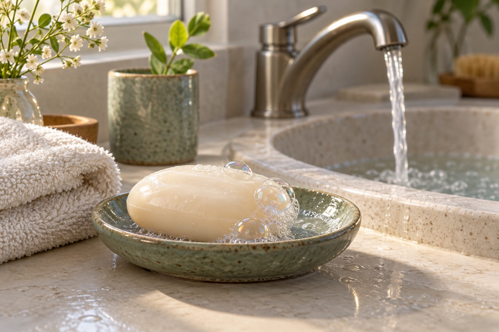

松动，还要带走
油污不容易只靠水洗掉。肥皂里的小分子能和水、油污打交道；加上来回搓洗，许多污物和微生物会松动。接着，流动的清水把它们连同肥皂一起带走。

有些污物看得见，许多微生物却太小，眼睛看不见。吃东西前、上厕所后，把手洗好，能减少有害微生物搭着手到处旅行。
微生物并不都是坏家伙。我们的皮肤上也住着许多无害、甚至有帮助的微生物。洗手不是把手变成没有生命的“无菌星球”。
可操作的放大示意
依次点选五个区域，看看怎样搓到它
屏幕上的点选只帮助记住步骤，不会测量手是否洗净。真正洗手时，要用肥皂搓洗至少 20 秒，照顾两只手，再冲净、擦干。
油污不容易只靠水洗掉。肥皂里的小分子能和水、油污打交道；加上来回搓洗，许多污物和微生物会松动。接着，流动的清水把它们连同肥皂一起带走。
大泡泡里面主要是空气。泡泡多不等于洗得更干净，别为了堆泡泡一直挤肥皂。把所有部位认真搓到，再冲净、擦干，比盯着泡泡多少更有用。
用干净的流动水，冷水或温水都可以，不需要烫水“杀菌”。请大人帮忙调到舒服的温度。搓洗时关上水龙头，轮到冲洗再打开。
把知识带回今天
先想一想：刚刚摸过什么，接下来要做什么？
别让手把污物带到食物上。
即使看不到脏，也要用肥皂和清水洗。
尤其是手碰到了鼻涕、唾液或用过的纸巾。
玩得开心，洗好手再继续。
本页讲家庭与日常生活中的洗手。普通肥皂或用于水洗的洗手液配合清水即可；不需要把“抗菌”标签作为日常洗手的必要条件。表面活性剂帮助污物从皮肤上脱离，摩擦、冲洗和干燥共同完成清洁。它并不承诺消除所有微生物，也不是清除所有化学污染物的方法。
这里把洗手分成五站，方便记忆。CDC 建议用皂搓洗至少 20 秒；这不包括打湿、取皂、冲水和擦干的全部时间。WHO 的医疗洗手图示把整套流程标为 40—60 秒，两者计时范围和应用场景不同。家长可和孩子一起注意手背、指缝、拇指、指尖与指甲周围，温和搓洗，不用刷到发红。
洗完用干净毛巾或干手设备把手弄干；湿手更容易传播微生物。本篇不演示含酒精的免洗消毒剂，用皂水洗手尤其适合手上明显有脏污或油污的时候。
放大图是教学绘图：皮肤、油污、微生物和肥皂分子没有按真实比例绘制；颜色、颗粒数和位移不表示菌种、数量、杀菌率或实测清洁效果。泡泡只作外观提示，放大图中的小圆头与短线才是简化的分子符号。点选五处表示已看过五段说明，不是验证真实洗手动作。封面为 AI 生成的生活插画。
资料核对：2026 年 9 月 12 日。